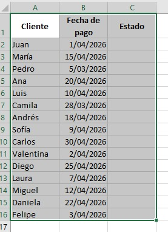
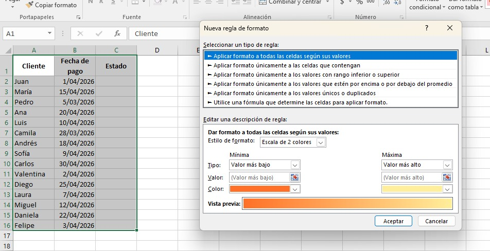
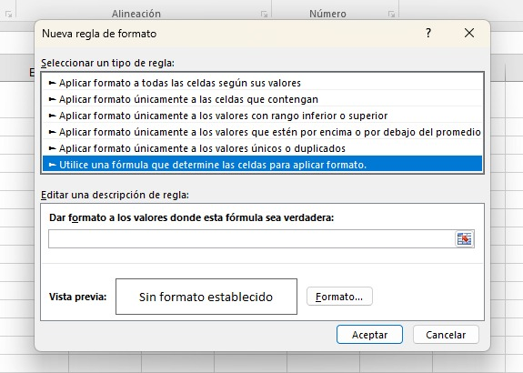
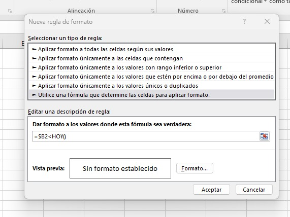

Una guía completa para que cualquier persona pueda aplicarlas paso a paso, con imágenes reales del proceso.
¿Qué son? Son instrucciones que le das a Excel para que cambie automáticamente el color o estilo de una celda cuando se cumple una condición que tú defines — sin que tengas que hacerlo manualmente una por una.
Piénsalo así: Imagina que tienes una lista de pagos. ¿No sería útil que Excel coloreara en rojo automáticamente los que ya están vencidos y en verde los que están al día? Eso es exactamente lo que hacen las reglas personalizadas: tú defines la condición, y Excel hace el trabajo.
Proceso paso a paso con imágenes reales
Así se ve la hoja antes de aplicar cualquier regla. Primero selecciona el rango donde quieres aplicar el formato.

Columna A: nombres de los clientes — solo referencia.
Columna B (Fecha de pago): aquí aplicaremos la fórmula para detectar fechas vencidas. Selecciónala antes de empezar.
Columna C (Estado): se puede usar para reglas basadas en texto, como "Pendiente" o "Pagado".
Ve a Inicio → Formato condicional → Nueva regla. Aparece esta ventana con 6 tipos de reglas disponibles.

Lista de tipos de regla: Excel ofrece 6 opciones. La que está resaltada en azul es la primera (escalas de color automáticas), pero no es la que necesitamos.
La última opción es la clave: "Utilice una fórmula que determine las celdas para aplicar formato." Esta nos da control total para crear condiciones propias.
Vista previa y botón Formato: al final del cuadro verás cómo quedará el color antes de aceptar.
Haz clic en la última opción de la lista. Aparecerá un campo en blanco donde escribirás tu condición.

Opción seleccionada (resaltada en azul): "Utilice una fórmula que determine las celdas para aplicar formato."
Campo de fórmula (vacío): aquí escribirás tu condición en el siguiente paso. Ejemplo:
=$B2<HOY()
Botón "Formato...": después de escribir la fórmula, haz clic aquí para elegir el color de relleno.
Así se ve con la fórmula ya escrita. En este ejemplo detecta fechas anteriores a hoy para marcarlas automáticamente.

Fórmula ingresada: =$B2<HOY() — significa: "si la fecha en la columna B es
anterior a hoy, aplica el formato."
El signo $ antes de B: bloquea la columna B para que Excel siempre compare esa columna en toda la fila, sin moverse.
HOY(): función de Excel que devuelve la fecha actual. La regla se actualiza sola cada día sin que hagas nada.
Último paso: haz clic en "Formato..." → pestaña Relleno → elige el color → Aceptar → Aceptar.
Ejemplos prácticos — haz clic para ver cada caso
Verde si aprueba, rojo si reprueba
Resaltar ventas sobre la meta
Marcar pagos atrasados en rojo
Colorear toda una fila por estado
Consejos importantes
El signo $ bloquea la columna: $B2 (con $ solo en la letra) hace que Excel
siempre evalúe la columna B para toda la fila. $B$2 fija tanto la columna como la fila — solo mira
esa celda exacta.
La fórmula va para la primera celda del rango: escribe la condición pensando en la primera celda seleccionada. Excel ajusta automáticamente la fórmula para todas las demás.
Puedes tener varias reglas: Excel permite múltiples reglas sobre el mismo rango. Adminístralas desde Formato condicional → Administrar reglas y cambia su orden de prioridad.
"Detener si es verdad": si activas esta opción en Administrar reglas, cuando una regla se cumple, Excel no evalúa las siguientes. Útil para evitar que se mezclen colores.